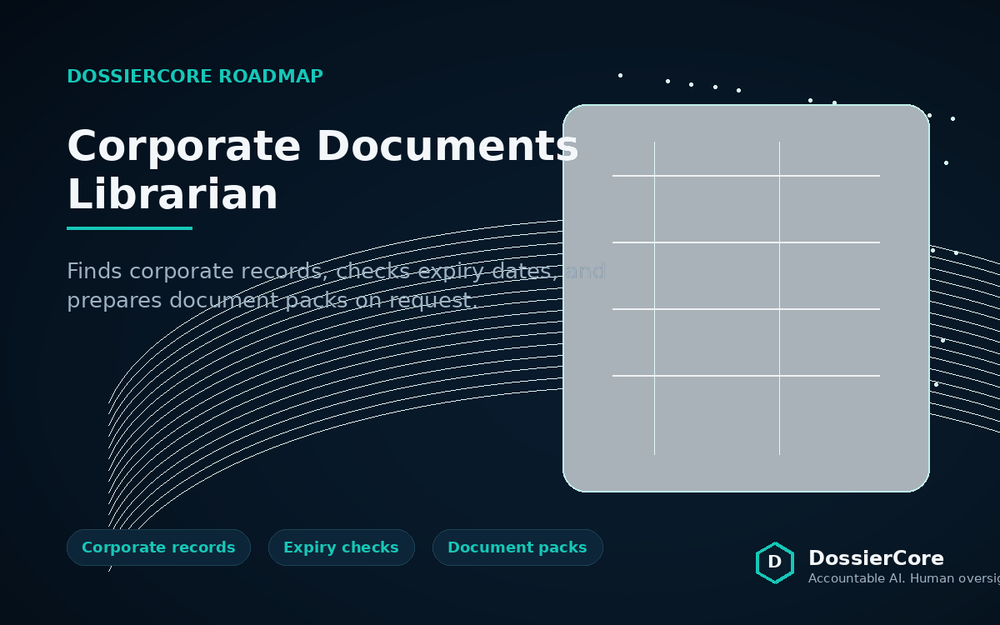
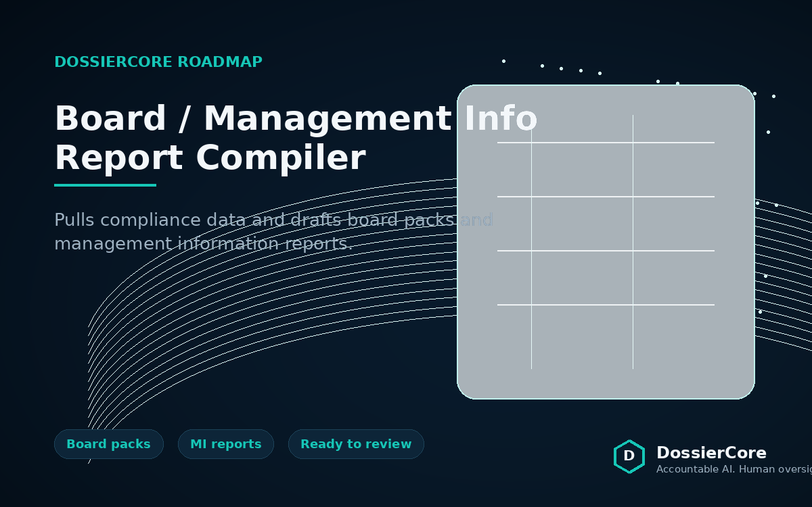

DossierCore
Our services & tools
Everything we offer – from audits to fully built tools – is available on request. You only pay for what you use, and we open‑source stripped‑down versions for DIY teams.
Compliance Automation Audit
We map your current KYC/AML workflows, identify repetitive high‑volume tasks, and deliver a prioritised automation roadmap. You receive a concrete report, not just advice. The audit is a one‑time engagement that serves as the blueprint for any pilot or full deployment.
Pilot Build
We adapt OnboardAI and PolicyPulse to your exact documents and deploy them on your infrastructure – self‑hosted or fully guided setup. The pilot typically runs for 4‑6 weeks and demonstrates tangible time savings. No vendor lock‑in: the code runs on your hardware, and you keep full ownership of any customisations.
Ongoing Support
A monthly retainer that covers updates, new features, and maintenance as your requirements evolve. Your data never leaves your control. Support also includes access to our private repository of compliance automation modules and priority email/chat assistance.
Local LLMs • Docker • No Cloud
All our tools run on Llama 3.1, OCR, and containerised deployment (Docker). You stay in control – your data never leaves your infrastructure. We provide pre‑built container images, orchestration scripts, and documentation for air‑gapped environments.
On‑demand tools (build on request)
Any of the following can be built for your organisation. After delivery, we release a stripped‑down open‑source version on GitHub for the community.

OnboardAI – Automated KYC Onboarding
Our flagship tool: drop a client pack into a folder → document completeness check → identity & risk data extraction → sanctions/PEP screening → professional Word report. Fully offline, customisable to your document templates and risk rules.

PolicyPulse – AML Policy Update Engine
Input your AML policy plus a new regulatory notice. The engine performs a section‑by‑section comparison, flags changes, and produces a reviewer checklist with diffs and citations. Uses a local vector database to learn from past regulatory updates.

KYC Document Certification Validator
Automatically checks certification wording, dates, and certifier details. Flags non‑compliant documents before they reach human review, reducing back‑and‑forth with clients.

STR/SAR Drafting Assistant
Analyses transaction data, flags unusual patterns, and drafts suspicious transaction report narratives for MLRO review. The MLRO retains final approval and can edit before submission.

Compliance Librarian
A chat‑based assistant that retrieves the right documents from your secure store, checks expiration dates, and assembles submission packs on request. Works with natural language queries like “Show me all expired CDD for client X”.

Ongoing Monitoring Engine
Periodically re‑screens client names against updated sanctions/PEP lists and scrapes adverse media sources. Reports only what’s changed, with a clear audit trail.

Corporate Documents Librarian
Specialised version of the Compliance Librarian focused on corporate entities – retrieves articles of incorporation, ownership charts, and board minutes, and checks validity dates.

Board/MI Report Compiler
Pulls data from multiple compliance sources (transaction monitoring, screening, case management) and drafts ready‑to‑review board packs and management information reports in Word/PDF.
Regulatory Change Impact Assessor
Maps new regulatory requirements directly to your internal controls, not just policy wording. Shows exactly which controls need updating, with suggested remediation steps.